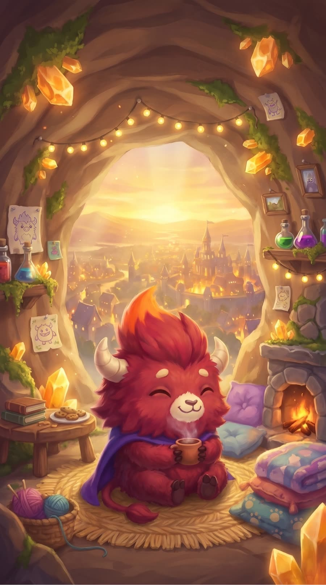

Eric Gimarse
AI animator & designer in SoCal — building app & game UI in public.
Google Flow • Higgsfield • ElevenLabs

Portfolio Piece #1 — Flair Poof
An animated game title screen for an original character: a tiny red poof monster with big flair, overlooking the kingdom he is about to save. Character design, turnaround sheet, scene and looping animation created with AI tools, then built into an interactive page.

Portfolio Piece #2 — Poof
An animated app home screen for a cozy daily-quest companion app. Poof lives in a cave in the hills, too shy to visit the town below — the tiny quests you finish together grow the living flame on his head. Animated header, working quest cards, progress ring, streak flame, and tabs, presented in a phone mockup.